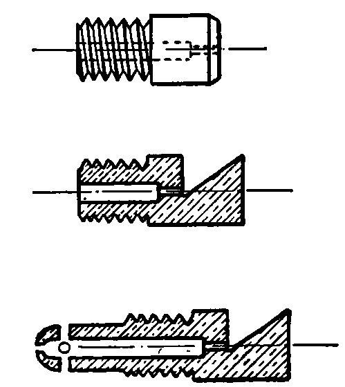
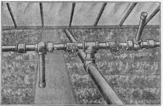
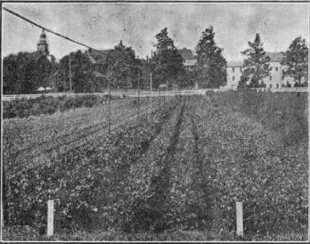

122. The Overhead System Of Irrigation
Description
This section is from the book "Vegetable Gardening", by Ralph L. Watts. Also available from Amazon: Vegetable Gardening.
122. The Overhead System Of Irrigation
The Overhead System Of Irrigation promises to revolutionize garden irrigation in the East. Numerous plans, some of which have been described, have been used to a very limited extent since the early days when Peter Henderson was a practical gardener on Long Island. None of the methods, however, became universally popular until the Skinner system was introduced in 1904. This is an overhead method used in hundreds of gardens and greenhouses. Its success, when properly installed, is universally admitted.
Fig. 16. NOZZLES FOR THE SKINNER SYSTEM OF IRRIGATION.
The advantages of this system of watering may be summarized as follows: (1) The water falls in the finest spray, thus preventing the washing and hard incrustation of the soil; (2) the water is distributed with the greatest uniformity; (3) there is no injury to the plant by the force of the water; (4) very little labor is required to operate the system; (5) because the water falls as in a gentle shower the foliage is cleansed and the effect is to encourage the most healthful and vigorous growth; (6) insecticides and fungicides and liquid fertilizers may be applied through the water lines; (7) the cost of installation is low, considering the merits of the system. It varies from $90 to $150 an acre.
Water may be pumped directly into the system, or reservoirs may be constructed to hold it. When water from a city reservoir can be secured at a reasonable price the problem is very simply solved. A great many growers, however, pump directly into the system. The water mains or feeders should be of ample capacity to supply the nozzle lines.
Fig. 17. union for the skinner system of irrigation.
All nozzle lines should be of galvanized pipe and of the size indicated in the accompanying table. The pipes are generally 50 feet apart in outdoor irrigation, and should be supported on posts about 25 feet apart. Two-inch pipe is generally used for posts, while some gardeners use cedar or locust posts.
Figure 15 shows the position of the patented drilling machine when in operation. This work must be done with the greatest care. The nozzles, also patented, are placed 4 feet apart for outdoor irrigation and 3 feet apart for greenhouse watering. They must be in perfect alignment. Different nozzles (Figure 16) are used for greenhouse and outdoor work. A patented union (Figure 17) is also required for the installation of this system.
Sizes Of Pipe For Outdoor Nozzle Lines
Calculated on outdoor nozzles placed 4 feet apart. If the nozzles are closer together larger pipe must be used.
Nozzle No. | Length of line feet | No. feet 1-in. pipe | No. feet 1-in. pipe | No. feet l 1/4-in. pipe | No. feet l 1/2-in. pipe | No. feet 2-in. pipe |
150 | 150 | |||||
200 | 130 | 70 | ||||
250 | 100 | 150 | ||||
No. 1 | 300 | 100 | 150 | 50 | ||
Outdoor | 400 | 90 | 160 | 150 | ||
500 | 90 | 160 | 150 | 100 | ||
600 | 90 | 160 | 175 | 175 | ||
700 | 90 | 160 | 175 | 175 | 100 | |
No. 2 Oatdoar | 150 200 250 300 400 500 600 | 115 100 90 90 80 75 75 | 35 100 100 100 100 100 100 | 60 110 120 120 120 | 100 120 120 | 85 185 |
Distance Between Nozzle Lines For Outdoor Irrigation
Nozsle.No. | Pounds pressure | Distance between lines, feet | Nozzle No. | Pounds pressure | Distance between lines, feet |
10 | 40 | 45 | 60 | ||
20 | 50 | 75 | 60 | ||
No. 1 | 40 | 56 | No. 2 | 80 | 56 |
Outdoor | 45 | 56 | Outdoor | 100 and over | 50 |
50 | 54 | ||||
75 and over | 50 |
The greater the pressure the finer the spray; but after reaching a certain pressure the spray is so fine that it retards the flow of water and reduces the distance of throw. It follows that when the pressure is so high as to produce these results, the lines must be installed slightly closer together, according to the preceding table. The above pressure refers to pressure at nozzles.
Fig. 18. irrigation system installed at the pennsylvania state college.
Figure 18 shows the overhead system in use at the Pennsylvania State College. A lever is provided at one end of each nozzle line, by means of which the entire line is easily turned. When in operation, the line is kept in one position until a strip of land has been sufficiently watered, and then the line is turned so the spray will fall on unwatered ground. It takes only a few seconds to turn each line and the attendant may be engaged in other work, making the rounds of the pipe lines as often as may be necessary. If watering is attended to systematically, it is probably never desirable to apply more than an inch of water at a time. The numerous bulletins issued by the manufacturers of the drills, nozzles and unions give additional details concerning the installation and operation of this system.
Continue to:
Tags
plants, crops, gardening, cultivated, harvesting, food ,greenhouses, fertiliser, vegitables